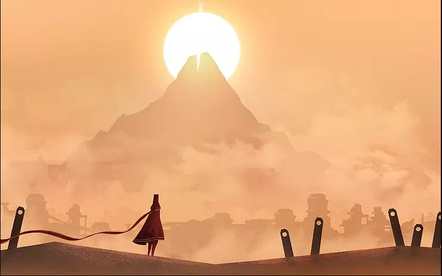
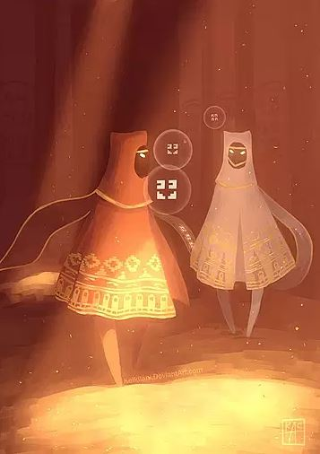
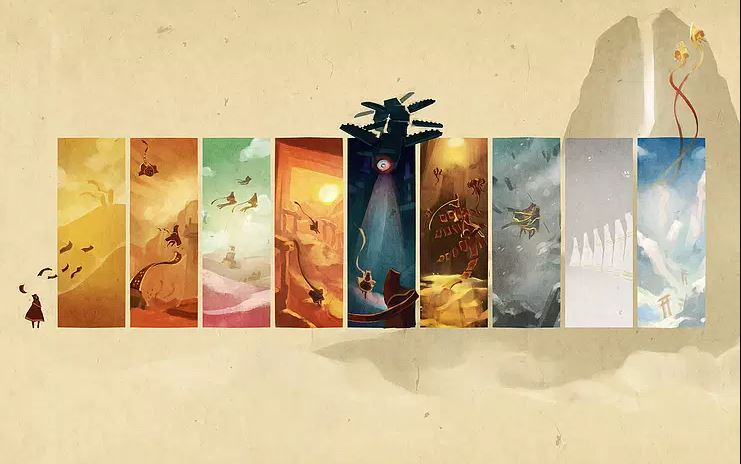

My Journey Through Journey

I haven't been much of a gamer actually but there have been some games that managed to keep my interest and attention for quite some time. The highlight of my gaming activity was in the beginning of 2000s - when I used to come home from school and complete all of my homework - as a reward I would be allowed to spend some hours playing games on the good old Windows XP. Some of the games I played a lot as a kid were GTA: Vice City, Return to Castle Wolfenstein, Tomb Raider series, The Mummy, KAO the Kangaroo, Dungeon Siege…Oh, and of course it was a must to play Quake over LAN when the informatics teacher was out of the classroom.
When I graduated from high school there was a stagnation period in my gaming life until I entered Informatics studies and got to know many more nerds and experienced gamers.
So, what is my Journey? This is a bunch of very warm and colourful emotions but at the same time it's a place to meet yourself, to fill-up your inner positive energy jar and to re-discover some magical emotions that may have faded in the everyday routine.
That's how I remember it….
…I have discovered myself in the middle of the unknown, an enormous dessert filled with secrets of the fallen civilization. Why am I here? Where have I been before this very moment? What is my purpose? Will I ever find the answer to these questions and am I supposed to find it? I can see a mountain, stately located behind the horizon of silky golden sands…this mountain was to define the further steps in my Journey. 
While I smoothly drift along the dessert and fly up high to the top of half-destroyed temples in search for concealed messages, I can't stop thinking of what surrounds me..What made this place disappear? Will it await for me there, on the top of the mountain? Who were those living here before? Only the flying creatures, helping me to keep up the energy, know the stories that are never to be told..
Suddenly I see a silhouette in the distance - I don't know who it is and if it a name. I don't know where it comes from and what it's story is. I can't ask and I can't get an answer but we can sound…We can use only sound, together making it a music stream, a never-ending song of peace and equality, flowing in harmony along the clouds above the forgotten civilization. And what's more valuable is that it wants to share the sacrament of the Journey with me. And from that moment on I'm not alone anymore.

When we reached the Mountain, the toughest challenge was still to come - a challenge to test my strength, will-power and intention. And the moment I thought my Journey was about to end, I have found my new self and one more Journey was about to begin.
Gratitude. That was the feeling I had in the end. For the quality time with my inner self. For the colours, music and sounds. For the guiding light and tiny secrets being discovered on the way. For the privilege of acquiring knowledge about the mystery of the faded civilization. For the opportunity to look at myself from the new angle. And gratitude to the unknown fellow traveller who has shared this experience and this Journey with me.
The story of my Journey is long and discoveries have been many (and I don't want to include all the spoilers in this post) but your Journey will be different from mine though the main idea will stay the same. This game is about beauty of inner self, beauty of the world you are living in, and beauty of the fellow travellers, mysterious but much alike yourself, taking the chance to experience your Journey and unite it with theirs. And it's also about gratitude - for everything you sense and receive unconditionally during the game and maybe even outside of it.
In conclusion, I would like to pay my respect and gratitude to:
-
Creators of Journey, those who make a change in this world and call for genuine emotions in people with their games - thatgamecompany - an independent American video game development company, founded by two students, Jenova Chen and Kellee Santiago in far 2006. I think that game development becomes a form of art in itself when the company focuses on what meaning the game will bring to it's players and with what feelings and emotions players will be left after experiencing the game. Thumbs up for all the fourteen people that have been involved in development of one of the most touching and catchy games I (and many many others) have ever played. In addition to Journey, thatgamecompany, has developed three other games - Flower, Sky and Flow that I'm about to experience in the nearest future … well, actually I'm gonna go and experience Flower right now! Hopefully, I will have a lot of good things to share about it with you later. Anyway, way to go, thatgamecompany!
-
A man behind the music of Journey - Austin Wintory. An American composer that has created so colourful and magical music for both Journey and Flow, that even listening to it separately, outside of the game, will bring a lot of joy and excitement :) Three years of work, strong cooperation with game developers, hours of re-works and, in the end, 100% deserved Grammy nomination for the Best Score Soundtrack for Visual Media - according to Wikipedia, the first video game score to receive a Grammy nomination - all this is a “child” of a bunch of talented people, motivated by bringing some special emotions in people and making the game experience a sacred and unique experience that would last a lifetime. More thumbs up for Mr. Austin Wintory, a group of soloists, the Macedonia Radio Symphonic Orhestra and Lisbeth Scott - a miraculous voice behind the final track of Journey “I was born for this”. I'm looking forward to hearing more of your works, hopefully in Sky, too.

I cincerely hope that if you haven't tried this game, you've at least gotten a bit curious about it and will give it a try in the future.
Till we connect again!